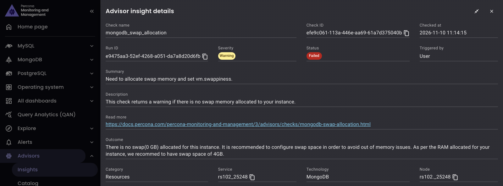
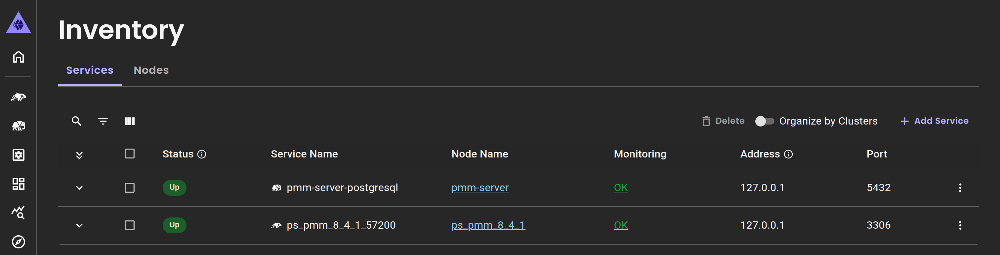
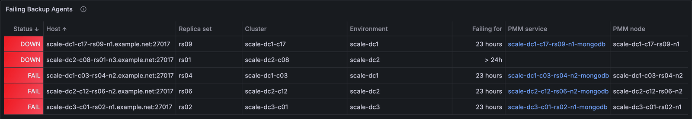

Percona Monitoring and Management 3.11.0¶
Release date: 26 November 2026
Percona Monitoring and Management (PMM) is an open source solution for monitoring and managing MySQL, PostgreSQL, MongoDB, Valkey, and Redis databases, on premises or in the cloud.
📋 Release summary¶
PMM 3.11.0 introduces alerts on slow queries from Query Analytics data, smarter Advisors that run on schedule and email their results, and a native PMM UI Inventory page.
This release also adds the pmm-admin update command, deprecates PostgreSQL 14 in PMM Server and VictoriaMetrics downsampling, and includes security fixes for ClickHouse and nginx, along with improvements and bug fixes across all deployments.
✨ Release highlights¶
Alert on slow queries with Query Analytics data¶
In addition to alerting you about server and database health based on the metrics it collects, PMM can now also alert you about query performance, based on the query data you see in Query Analytics.
The new built-in QAN slow queries template covers the most common case: it alerts you when the slowest query on a MySQL, PostgreSQL or MongoDB service runs longer than 10 seconds.
To get started, set up alerts on Query Analytics data using the built-in template or your own.
Smarter Advisors that run on schedule, email results and suggest fixes¶
You no longer need to open PMM to find out what Advisors found. Schedule checks to run when it suits your team, on the services that matter to you, and PMM can email you a report after each run.
For anything the built-in checks don’t cover, write your own checks and test them on a service before you save them.
When you need to follow up on an issue, the new Insights page shows which services it affects, when it was found and, for most built-in checks, how to fix it:

What changes when you upgrade¶
Upgrading to PMM 3.11.0 changes your existing Advisor settings, dashboards and API calls:
- Schedules replace run intervals. By default, the All checks daily schedule runs every check at 06:00 UTC. If you used custom intervals, recreate them as schedules.
- All checks run again, including the ones that you turned off. Turn them off again in Advisors > Catalog.
- Advisors > Insights replaces the Advisor panels on the Home and Environments Overview dashboards. Review findings there instead.
- New endpoints replace some Advisor API endpoints. If your scripts call the Advisor API, switch to the new endpoints.
One version check for each database¶
When a database needs an upgrade, Advisors now give you one clear finding instead of several overlapping ones. The separate checks for newer versions, end of life and known vulnerabilities are replaced with a single version check for each database: MySQL version check, MongoDB version check and PostgreSQL version check.
Each check tells you whether a newer version is available, and whether your current version has reached end of life (EOL) or reaches it within six months. The finding also explains why an upgrade matters and gives you what you need to plan it, such as what changes in the newer version, how long your current version is supported, or which security fixes your version is missing.
This release also fixes six other MongoDB and PostgreSQL checks that failed or gave wrong results on default setups.
What to expect after you upgrade¶
After you upgrade to PMM 3.11.0, you will see fewer version checks in Advisors > Catalog and new errors in Advisors > Insights:
- Databases on a version that reached EOL in recent years now show an error. The old checks used outdated EOL dates, so they missed these versions:
- MySQL 8.0, including Percona Server for MySQL and Percona XtraDB Cluster 8.0
- MongoDB 5.0, 6.0 and 8.2
- PostgreSQL 11 to 14
- MariaDB 10.6
- Amazon RDS for MySQL versions past standard support, as “end of standard support”
- MongoDB 4.4 and PostgreSQL 10 and older, which showed a warning until now
-
Eight older version checks are removed, and the new check for the same database replaces them:
mongodb_EOL,mongodb_cve_versionandmongodb_unsupported_version: replaced by the MongoDB version checkmysql_unsupported_version_checkandmysql_version_eol_57: replaced by the MySQL version checkpostgresql_cve_check,postgresql_eol_checkandpostgresql_unsupported_check: replaced by the PostgreSQL version check
If you turned off one of these checks, turn off its replacement instead. For example, if you turned off
mongodb_EOLto stop end-of-life findings for a MongoDB version that you plan to keep, turn off the MongoDB version check. -
mongodb_cve_versionandpostgresql_cve_checklisted specific vulnerabilities (CVEs), but their lists were no longer kept up to date. Instead, when your version is missing security fixes, all three version checks tell you and link to the vendor’s security page, where you can see which vulnerabilities affect your version.
Inventory page now in native PMM UI¶
PMM has used its own navigation instead of Grafana’s menus since 3.6.0, and its pages are gradually moving from Grafana to native PMM UI. Inventory now joins Updates, Help, Real-Time Analytics, Settings and Alerts > Status, which already run there.
You get the same services, nodes and agents, now with:
- filtered views that you can bookmark and share, while your existing bookmarks keep working
- credentials, TLS and query source settings that you can change without removing a service and adding it again
-
a simpler layout, with the details and actions of each service and node right in its row:

Change a monitored service from the command line without removing it¶
Rotating a password or renewing a certificate no longer means removing a service and adding it again, or changing its agents one by one with pmm-admin inventory change agent, which PMM 3.7.0 introduced.
With pmm-admin update, you change the settings of a monitored service in one command, and PMM applies them to all its agents. The service keeps its ID, so its metrics, Query Analytics history, alerts, and backups stay with it. It works for MySQL, PostgreSQL, MongoDB, Valkey, ProxySQL, HAProxy, and external services, and it changes only the flags that you pass.
Preview a change with --dry-run before you apply it. If you change the credentials, TLS settings, or address, PMM first checks the connection to the database, so a wrong value doesn’t replace a working one. To get started, change the settings of a monitored service.
Find failing MongoDB backup agents at a glance¶
If you manage a large MongoDB fleet, you can now see right away which backup agents need attention. The new Failing Backup Agents table on the MongoDB Backup Details dashboard lists only the failing agents and how long each one has been failing, so you no longer have to search the Backup Agent Status grid for them:

Find your failing backup agents to get started.
More metrics to monitor Percona Backup for MongoDB (PBM)¶
PMM now collects more PBM metrics, so that you can watch the parts of your backup setup that the MongoDB Backup Details dashboard doesn’t show yet. Use them in your own dashboards and alert rules to catch:
- backups that keep failing since the last successful one
- a restore that is running, failed or completed
- a point-in-time recovery (PITR) recovery point that falls behind
- PBM agents that run different versions
For the list of metrics, their labels and example queries, see PBM metrics for custom dashboards and alerts.
Added support and deprecations¶
PostgreSQL 14 deprecated in PMM Server¶
PostgreSQL recently stopped supporting version 14, so it no longer gets security fixes. Because of this, PMM deprecates PostgreSQL 14 in PMM 3.11.0 and will remove it completely in PMM 3.13.0 (expected January 2027).
Impact on the built-in database¶
PMM already switched the built-in database of PMM Server to PostgreSQL 18 in PMM 3.10.0 and includes PostgreSQL 14 only to migrate existing data when upgrading from PMM 3.9.1 or earlier.
Once PMM 3.13.0 removes PostgreSQL 14, PMM can no longer migrate that data, so it can’t upgrade a PMM Server that runs PMM 3.9.1 or earlier directly. If your PMM Server runs PMM 3.9.1 or earlier:
- before PMM 3.13.0: upgrade to PMM 3.11.0 or 3.12.x as usual. Your data moves to PostgreSQL 18 automatically.
- after PMM 3.13.0: upgrade in two steps. First upgrade to a version from PMM 3.10.0 through 3.12.x, then to PMM 3.13.0 or later.
Impact on external databases¶
PMM 3.13.0 requires PostgreSQL 15 or later for external databases. If you configured PMM Server to use an external PostgreSQL database instead of the built-in one, and it runs an earlier version, upgrade it before you upgrade PMM Server to PMM 3.13.0.
VictoriaMetrics downsampling deprecated¶
PMM 3.11.0 deprecates two features of PMM’s own build of VictoriaMetrics: downsampling and reading Prometheus data files. Both keep working in PMM 3.11.0, but PMM 3.12.0 will remove them completely, because it will switch to the official open source release of VictoriaMetrics, which doesn’t include them. The switch lets PMM ship VictoriaMetrics fixes without waiting for a PMM-specific build.
Once PMM 3.12.0 is out:
- Downsampling (
VM_downsampling_period): PMM ignores this setting, so new data stays at full resolution and needs more disk space. Data that is already downsampled stays downsampled. - Reading Prometheus data files (
VM_prometheusDataPath): PMM ignores this setting, so metrics stored in those files no longer appear in PMM.
If you use downsampling, prepare before you upgrade to PMM 3.12.0.
🔒 Security updates¶
nginx HTTP/2 memory corruption (CVE-2026-123007, -123633)¶
PMM-15947: Critical severity. PMM Server uses nginx for all connections to the PMM UI and API. An unauthenticated attacker who can reach PMM Server over HTTP or HTTPS could crash nginx, which makes PMM unavailable, or potentially run code on PMM Server.
Affected installations¶
All PMM Server deployments of PMM 3.10.0 and earlier. The risk depends on who can reach PMM Server over HTTP or HTTPS:
- PMM Server reachable only from trusted networks: lower risk.
- PMM Server reachable from untrusted networks or the internet: upgrade as soon as possible.
How to fix¶
Upgrade to PMM 3.11.0. It includes nginx 1.30.7, which has the fixes from the nginx security advisories. Earlier versions installed nginx from the Oracle Linux packages, which didn’t have these fixes yet, so for this release, PMM installs it from the nginx.org stable repository instead.
How you upgrade depends on how you deploy PMM:
- PMM Server on Docker, Podman, AWS or Kubernetes: upgrade PMM Server.
- PMM HA cluster on PMM 3.10.0: upgrade the
pmm-haHelm chart. - PMM HA cluster on PMM 3.9.1 or earlier: you can’t upgrade this cluster, because PMM HA was a Tech Preview before PMM 3.10.0 and didn’t support upgrades. Instead, install a new PMM HA cluster with PMM 3.11.0. The new cluster starts without the monitoring data of the old one.
How to reduce risk¶
Until you upgrade, allow connections to PMM Server only from trusted networks. An attacker needs to reach PMM Server over the network to exploit these vulnerabilities.
ClickHouse remote code execution (CVE-2026-116366)¶
CRITICAL severity. An unauthenticated attacker who can reach ClickHouse Server over the network can execute arbitrary code on the server.
Affected installations¶
The risk depends on how you deploy PMM:
- PMM Server as a single container: Low risk. ClickHouse accepts connections only from within the container by default.
- PMM HA: Affected. Other pods in the cluster can reach ClickHouse. Upgrade as soon as possible.
- PMM with an external ClickHouse: Affected if your ClickHouse version doesn’t include the fix.
Mitigation options¶
To fix the vulnerability, upgrade to a ClickHouse version that includes the fix. Upgrading keeps your Query Analytics data, but you can’t go back to the older ClickHouse version afterwards. To upgrade safely:
- Back up PMM Server on Docker, Podman, Helm or a PMM HA cluster.
- Upgrade, depending on how you deploy PMM:
- PMM Server as a single container: upgrade to PMM 3.11.0, which includes ClickHouse 26.3.62.3.
- PMM HA: upgrade the
pmm-haHelm chart to version 1.9.0, which installs PMM 3.11.0 and includes ClickHouse Altinity Stable 26.3.60.10002. The upgrade restarts the ClickHouse and ClickHouse Keeper pods one at a time, and Query Analytics keeps collecting data. - PMM with an external ClickHouse: upgrade your ClickHouse to a fixed release, such as 26.3.62.3 or a later 26.3 release. To find the fixed release for your version, check the ClickHouse security changelog.
Go standard library HTTP/1 server crash (CVE-2026-97054)¶
Fixed in pmm-managed, pmm-agent, pmm-admin, qan-api2, and vmproxy by rebuilding on Go 1.27.4.
Grafana anonymous access exposed PMM features (PMM-15339)¶
When Grafana anonymous access was turned on, visitors who weren’t signed in could also use PMM features such as Query Analytics. Now they can open only your dashboards.
Other dependency updates¶
- PMM-18742: Updated the Grafana ClickHouse data source plugin to v4.23.5, built with Go 1.27.3. This fixes the high-severity Go vulnerabilities that image scanners reported in v4.21.3, including CVE-2026-78669, CVE-2026-78661 and the standard library findings listed in the PMM 3.10.0 release notes.
- PMM-15766: Updated Grafana to 12.4.14. This fixes the Grafana vulnerabilities listed in the PMM 3.10.0 release notes, including the critical
kin-openapiauthentication bypass (GHSA-r277-6w6q-xmqw). Security scanners still report CVE-2026-21728 and CVE-2026-28377 (Grafana Tempo), CVE-2026-116587 (go-jose), and CVE-2026-78661 (golang.org/x/net) in Grafana. - PMM-15842: Updated
golang.org/x/netto v0.62.0 inpmm-managed,qan-api2,pmm-agent,pmm-admin, and the MongoDB, MySQL, Node, and PostgreSQL exporters. This fixes CVE-2026-78661. - PMM-15225, PMM-15842: Updated VictoriaMetrics to 1.156.0. This fixes CVE-2026-78661, CVE-2026-78669, CVE-2026-78667, and CVE-2026-97031 in VictoriaMetrics, vmalert, and vmagent.
- PMM-15761: Rebuilt PMM Server, PMM Client, and PMM Dump on Go 1.27.4. This fixes the certificate validation issue CVE-2026-111943.
- PMM-18742: Updated Nomad to 2.1.1, which fixes CVE-2026-78669 and the
go-jose/v4finding for CVE-2026-116587. Security scanners still report CVE-2026-116587 for Nomad’sgo-jose/v3, which has no fixed release.
Remaining third-party security risks¶
Like most software, PMM relies on third-party components, and some vulnerabilities in them are disclosed too close to a release to fix in time. The vulnerabilities below remain in third-party dependencies of PMM Server, PMM Client, and the PMM Extensions image. Percona continues to monitor upstream disclosures, reassess their impact on PMM, and remediate them in future releases.
An affected dependency in PMM doesn’t mean that its vulnerable code is reachable. Exposure depends on the features you turn on, your network access, and your deployment. Use the details for each finding to assess your own deployment.
JSON Web Key parsing in Grafana and Nomad (CVE-2026-116587)¶
Affected component¶
- Grafana, with
github.com/go-jose/go-jose/v4v4.1.4. The fix is in v4.1.6. - Nomad in PMM Server and PMM Client, with
github.com/go-jose/go-jose/v3v3.0.5. There’s no fixed v3 release yet.
How this affects PMM¶
A JSON Web Key with crafted RSA parameters can use excessive CPU while it’s parsed, even before its signature is checked. Grafana’s JWT authentication uses the affected parser, and requiring a valid token doesn’t prevent the parsing cost. Nomad also uses go-jose in its identity code. Both JWT authentication and Nomad are turned off by default.
Mitigating factors¶
The following factors reduce the risk:
- Leave JWT authentication in Grafana turned off unless you need it. If you use it, review its configuration.
- Leave Nomad turned off unless you need it. If you turn it on, allow access to it only from trusted networks.
Remediation plan¶
Grafana needs go-jose v4.1.6, which Percona can include in its own Grafana build. Nomad needs an upstream move away from go-jose v3, or a tested backport of the fix.
HTML parser denial of service in Grafana (CVE-2026-78661)¶
Affected component¶
Grafana, with golang.org/x/net v0.60.0. The fix is in v0.62.0.
How this affects PMM¶
Crafted HTML can use excessive CPU and memory if it reaches the affected HTML parsing functions. Having the affected version doesn’t mean that untrusted HTML can reach these functions in PMM.
Remediation plan¶
Grafana needs golang.org/x/net v0.62.0 or later. Updating Go doesn’t update this separate dependency.
Grafana Tempo denial of service and information disclosure (CVE-2026-21728 and CVE-2026-28377)¶
Affected component¶
Grafana, with github.com/grafana/tempo v1.5.1-0.20260427112133-525d1bab07e0.
How this affects PMM¶
Both vulnerabilities are in the Tempo backend: large queries can use unbounded memory, and the /status/config endpoint can expose a configured S3 encryption key. PMM doesn’t run a Tempo backend, but its Grafana includes Tempo code for the client that connects to a Tempo data source.
Mitigating factors¶
If you connect Grafana to your own Tempo service, update it to Tempo 2.10.3 or later, which fixes both vulnerabilities.
Remediation plan¶
Percona hasn’t yet confirmed that the affected Tempo code is absent or unreachable in PMM’s Grafana build. Until then, treat these findings as potentially affecting PMM.
Debian packages in the PMM Extensions image¶
Affected component¶
The PMM Extensions image includes Debian packages with the following findings:
- OpenSSL
3.5.9-1~deb13u1: CVE-2026-107494 and CVE-2026-124709, memory exhaustion in QUIC connections. - SQLite
3.46.1-7+deb13u2: CVE-2026-119373, CVE-2026-119374, and CVE-2026-119379, memory corruption with crafted databases, FTS5 operations, or session changesets. - libacl
2.3.2-2+b1: CVE-2026-54369, pathname traversal by a privileged process. - systemd libraries
257.13-1~deb13u1: CVE-2026-16742, privilege escalation insystemd-homed. - ncurses
6.5+20250216-2: CVE-2025-69720, buffer overflow in theinfocmptool. - zstd
1.5.7+dfsg-1: CVE-2026-124851, information disclosure when decompressing crafted data.
How this affects PMM¶
The image doesn’t include systemd-homed or infocmp, so CVE-2026-16742 and CVE-2025-69720 don’t apply to the image as shipped. If you customize the image and add either tool, reassess these findings.
PMM Extensions runs as the non-root extensions user by default, which limits CVE-2026-54369. The other findings need PMM Extensions to use QUIC, open untrusted SQLite databases, or decompress untrusted data, which Percona hasn’t confirmed.
Remediation plan¶
The PMM Extensions image will get the fixed packages as Debian releases them. A fixed zstd package, 1.5.7+dfsg-1+deb13u1, is already available.
How to reduce risk¶
To lower your exposure in the meantime:
- Allow access to PMM, PMM Extensions, and internal component ports only from trusted networks and users.
- Keep the number of PMM administrators small, and enforce strong authentication.
- Leave unused authentication methods, data sources, and optional services, such as Nomad and JWT authentication, turned off.
- Set resource limits on PMM containers where possible. They reduce the impact of denial-of-service issues, but don’t replace dependency updates.
🧩 API changes¶
If your scripts or integrations call the PMM API, check whether these changes affect them:
-
New Advisor endpoints replace the old ones, and the
advisor_run_intervalssetting and theintervalfield of checks are removed. If your scripts call the Advisor API, switch to the new endpoints. -
Requests to the PMM API without credentials now fail, even when Grafana anonymous access is enabled. This is part of the fix for PMM-15339, which lets visitors who aren’t signed in view your dashboards and nothing else.
-
With access control enabled, the Query Analytics and metrics query APIs now refuse service account tokens, so automation can’t read data that your access roles restrict.
-
GET /v1/ha/nodesnow also lists the PMM HA nodes that are down, with the statusdeadorleft. If your automation counts the listed nodes to check the cluster health, count only the nodes with the statusalive.
To find the affected endpoints and update your automation, check the PMM API release notes.
📈 Improvements¶
Alerting and Advisors¶
- PMM-15193: The Expression panel on the Alerts > Status page now shows each step of an alert rule, including the query it runs and the step that fires the alert, so you can see why an alert fired.
- PMM-15239: The Alerts > Status page now groups alert severities into four bands: Critical, Error, Warning and Info. Each band has its own icon and label, so you can tell severities apart without relying on color. The Severity filter and sort work by band, and the alert details show the original level, for example Reported as Emergency. Alert labels stay the same.
- PMM-14109: Advisors now email a report after each run, keep a history of insights and runs, run checks on schedules instead of fixed intervals, and support custom checks. The upgrade removes the run intervals and some Advisor API endpoints, and enables every check again.
Inventory and services¶
- PMM-15002: The Inventory page now runs in native PMM UI, so it looks and works like the rest of the PMM interface. You can also bookmark and share filtered views of your services and nodes, and your existing Inventory bookmarks keep working.
- PMM-15674: You can now change how PMM monitors a service without removing the service and adding it again, so it keeps its ID and its history. In Inventory, edit the service to change its credentials, TLS settings, Query Analytics source and options, metrics mode, log level and exporter options, as well as its labels.
- PMM-14146: You can now change a monitored service and all its agents with one command,
pmm-admin update, instead of changing each agent withpmm-admin inventory change agent. Changing a service’s cluster removes the scheduled backups of every service in its current and its new cluster. - PMM-15481: You can now export services from Inventory > Services to a CSV file. Click Export to download the selected services, or every service that matches the search and filters. Each row includes the status, the monitoring status, the agents that failed, and the labels of the service.
MongoDB monitoring¶
- PMM-15484: You can now find the broken backup agents without scanning the healthy ones. The new Failing Backup Agents table on the MongoDB Backup Details dashboard lists only the PBM agents in FAIL or DOWN state.
- PMM-15595: You can now follow a Percona ClusterSync for MongoDB migration from one dashboard. The new MongoDB ClusterSync Details dashboard shows the source cluster, the sync, and the target cluster side by side, so you can check that the migration is healthy, follow its progress, and find where a slow or stuck sync loses time. It works with ClusterSync 1.0.0 or later. To use it, add each ClusterSync instance as an external service, then open MongoDB > ClusterSync.
- PMM-15682: You can now find the MongoDB queries to optimize first from one dashboard. The new MongoDB Top Queries dashboard ranks queries by time spent, executions, and documents examined, and also lists collection scans, the busiest collections, and the users who run the most queries. Open it from MongoDB > Top queries.
- PMM-15219: Added the
mongodb_pbm_cluster_backup_failures_since_last_successmetric, which counts the Percona Backup for MongoDB (PBM) backups that failed after the last successful one. Build an alert rule on it to get notified when backups keep failing. - PMM-15220: Added the
mongodb_pbm_restore_status,mongodb_pbm_restore_duration_secondsandmongodb_pbm_restore_last_transition_tsmetrics, which show whether the most recent PBM restore is running, failed or completed, and how long each recent restore took. If your monitoring user has a custom role, grant itfindonadmin.pbmRestores. - PMM-15222: Added the
mongodb_pbm_agent_version_infometric, which shows the version of each PBM agent, so that you can find outdated agents and clusters that run mixed PBM versions. - PMM-15207: Added the
mongodb_pbm_cluster_pitr_recovery_point_tsandmongodb_pbm_pitr_last_write_tsmetrics, which show the latest time that you can restore to with point-in-time recovery (PITR), so that you can alert when PITR falls behind. If your monitoring user has a custom role, grant itfindonadmin.pbmPITRChunks. - PMM-15355:
mongodb_exporternow uses less memory after PMM Client restarts or upgrades, and its binary is about half the size. The existing PBM metrics keep their names, labels and values.
Operations for MongoDB¶
- PMM-15805: You can now see why a service is failing in Operations for MongoDB. On MongoDB > Operations > Fleet > Services, the Collected column shows the reason, such as Database unreachable, and clicking the service’s status shows the full error and what to do about it.
- PMM-15699: PMM Extensions now records each change in Operations for MongoDB under the PMM user who made it, and checks that user’s role, instead of a shared internal identity. If your scripts call the Operations API for nodes, scans, installs or settings with a username and password, switch to a service account token, because those requests now get
401 Unauthenticated. - PMM-15825: Viewer and Editor users can now check MongoDB cluster health in Operations for MongoDB, which only Admins could use until now. They can open every page except the install form. Starting or aborting installs, removing node entries and changing settings still need the Admin role, and scanning nodes now needs it too.
- PMM-15797: Operations for MongoDB now checks the OS release of each node before an install. It blocks a node on an unsupported release, such as Ubuntu 20.04, and offers only the MongoDB versions that all your selected nodes support. Before, an install onto an unsupported release could put an old MongoDB build on the node or fail partway through.
- PMM-15806: You can now search the Clusters tab on MongoDB > Operations > Fleet by cluster name and filter it by Health, Type, and Environment. The search and filters are saved in the page URL, so you can share a filtered view. Each cluster shows its type next to its name. The new Type, Last seen, Max CPU, and Min conn. free columns are hidden by default, like Services, Process, and Versions. To add them, click Show/Hide columns.
Security and privacy¶
- PMM-14023: Users with basic authentication can no longer set weak passwords. New and changed passwords need at least 12 characters, with uppercase and lowercase letters, a digit and a symbol. Existing passwords keep working until you change them. If your scripts create users or change passwords, for example with
change-admin-password, update them to use passwords that meet the requirements. -
PMM-15891: Your passwords and Grafana secret key are no longer in PMM Server’s service environments or configuration files. PMM Server copies them from your environment variables to files that only it can read. To also hide them from the container settings, for example in
docker inspect, you can now provide them in files instead of environment variables.To make sure that PMM Server starts after the upgrade, check your database passwords for spaces or line breaks at the start or end, and remove them before you upgrade.
-
PMM-15908: Telemetry no longer includes the names of your custom Advisor checks or the services that they ran on. For Advisors, it now reports only usage, such as the number of insights for each built-in check, the number of findings in the last 24 hours, and which built-in checks are turned off.
PMM Server, apps and documentation¶
- PMM-15013: The PMM Server Docker image is now about 60 MiB smaller to download, because it no longer includes tools that PMM doesn’t use while running. This includes the
dnfpackage manager, so if you usednfto install packages inside the container, first install it as root, for example withdocker exec -u root pmm-server microdnf install -y dnf. - PMM-15846: The execution history of PMM Extensions apps, such as MySQL Backups, now shows a warning icon beside the status of a finished run whose logs were partly or wholly lost before PMM could store them, so you can spot it without opening the run. Hover over or tab to the icon for details.
- PMM-13820: You can now find every environment variable that PMM Client accepts in the pmm-agent configuration topic. The Docker example for adding services at startup now correctly uses
PMM_AGENT_PRERUN_FILEfor the script file instead ofPMM_AGENT_PRERUN_SCRIPT, which is meant for commands.
✅ Fixed issues¶
High availability and server reliability¶
- PMM-15785: Fixed an issue in PMM High Availability setups where the PMM Query Analytics dashboard could miss queries or show changing totals. This could happen after installation, a pod restart, or a restore, when the ClickHouse servers that store QAN data ended up with mismatched copies of the data. PMM now checks the copies every 10 minutes and keeps the one with the most data. Data that exists only in the other copies is deleted. You can check whether your installation is affected and see how much data PMM removed.
- PMM-15787: Fixed an issue where PMM HA could become unavailable for several minutes even when two of its three nodes were running. This could happen when the cluster first lost one node and then its leader node. The cluster removed the first failed node, so the running nodes couldn’t elect a new leader. PMM HA now keeps a node that fails in the cluster, so the running nodes elect a new leader within seconds. Because the node stays in the cluster, the
/v1/ha/nodesendpoint now also lists it, with the statusdead. Check the cluster health to see which node to bring back. - PMM-15910: Fixed an issue where PMM Server could stay unhealthy after an abrupt stop, for example
docker kill, a host crash or running out of memory. The built-in PostgreSQL database refused to start because of lock files left over from the previous run. PMM Server now removes these files when it starts. - PMM-15918: Fixed an issue where PMM Server didn’t start after you added your own SSL certificates with the
pmmorpmm-haHelm chart, or mounted them read-only on Docker. You can now mount your certificates without making the certificate directory owned by PMM Server.
Advisors, alerting and Query Analytics¶
- PMM-15706: Fixed Advisor checks that used outdated end-of-life (EOL) dates and missed some database versions that no longer get fixes. Also fixed six checks that failed or gave wrong results on default setups: the MongoDB multiple mongod services, swap memory, journal, log level and maxSessions checks, and the PostgreSQL WAL file accumulation check.
- PMM-15272: Fixed an issue where CPU alerts and dashboards showed about half of the real value after an Amazon RDS blue/green switchover. PMM now ignores the metrics of the old instance, which AWS renames to
<name>-old1. - PMM-15883: Fixed an issue where the Query Analytics overview table could show results that didn’t match the current search, filters or time range when you changed them quickly, for example by changing the time range and then searching before the table reloaded. The table now always shows the results for your latest search, filters and time range, and keeps loading until those results arrive.
Dashboards¶
- PMM-15654: Fixed the MongoDB Sharded Cluster Summary dashboard hiding clusters added without
--environmentwhen Environment is set to All and another MongoDB service has an environment set. These clusters now appear under All. - PMM-15828: Fixed panels on the MongoDB Sharded Cluster Summary, MongoDB ReplSet Summary, and MongoDB Instances Overview dashboards that showed wrong values or ignored the Environment and Cluster filters, such as Chunk distribution, Query Efficiency, Availability, and Time Since Election. DBs now counts only user databases, the collection panels no longer list the
adminandconfigdatabases, and Chunks Move Events and Chunks Split Events now show the number of events in the last 10 minutes. The service list on MongoDB MMAPv1 Details now shows MMAPv1 services. - PMM-15559: Fixed an issue where the Netstat: TCP panel on the Network Details dashboard showed ever-growing totals instead of current activity. The panel now shows new connections, resets, and retransmits per second, so you can quickly spot spikes. Currently open connections are now shown on a separate scale on the right side of the chart, so you can compare them with new connections, resets, and retransmits. Thanks to Bastian Triller (Placetel) for reporting this and contributing the fix.
Operations for MongoDB and apps¶
- PMM-15772: Fixed an issue where you couldn’t turn on Operations for MongoDB until you connected PMM Server to PMM Extensions manually. PMM Server now connects to PMM Extensions automatically. If you set
PMM_EXTENSIONS_URL,PMM_EXTENSIONS_TOKENandEXTENSIONS_INTERNAL_TOKENfor PMM 3.10.0, they keep working. If PMM still can’t use PMM Extensions, turning on Operations for MongoDB now says why, for example that PMM Extensions is unreachable or rejects PMM’s token. - PMM-15764: Fixed an issue where a MongoDB replica set that you installed with Operations for MongoDB on a port other than
27017wasn’t monitored, because PMM registered it for monitoring on port27017. PMM now monitors the replica set on the port you choose. - PMM-15860: Fixed Automatic node scans in MongoDB > Operations > Settings blocking Scan and Scan all on the Nodes page, and PMM turning automatic scans back on when it restarted. Turning off Automatic node scans now stops only the scans PMM starts on its own: the scheduled scans, the scan after each restart, and the scan when Operations for MongoDB is turned on. The setting stays off until you turn it back on.
- PMM-15801: Fixed arbiters showing as mongod with no member state on MongoDB > Operations > Fleet. An arbiter now shows Arbiter as its process and, while it’s running, ARBITER as its member state. The cluster’s Process column, which is hidden by default, also counts it as an arbiter instead of a mongod. If an arbiter isn’t in Fleet yet, add it to PMM without a username and password.
- PMM-15776: Fixed the description of the Connect to MongoDB option on the MongoDB > Operations > Settings page, which said that scans use the credentials PMM already has for your MongoDB services. Scans actually log in with a
.mongodb_urifile on each MongoDB node. If MongoDB requires authentication and scans don’t show the replica set state of your nodes, create this file on each MongoDB node. - PMM-15845: Fixed an issue where forms in PMM Extensions apps, such as Apps > MySQL Backups, showed some errors only after you submitted the form, in a banner above the form instead of next to the fields to fix. These errors now appear next to the fields while you fill in the form.
🔶 Known issues¶
PostgreSQL TLS connections fail when you skip verification and set a CA certificate (PMM-15940)¶
If you add a PostgreSQL service with both --tls-skip-verify and --tls-ca-file, PMM still checks the server certificate against that CA. If the CA didn’t sign the certificate, the connection fails. PMM can’t collect metrics or Query Analytics data from that service.
To work around this, don’t use --tls-ca-file with --tls-skip-verify.